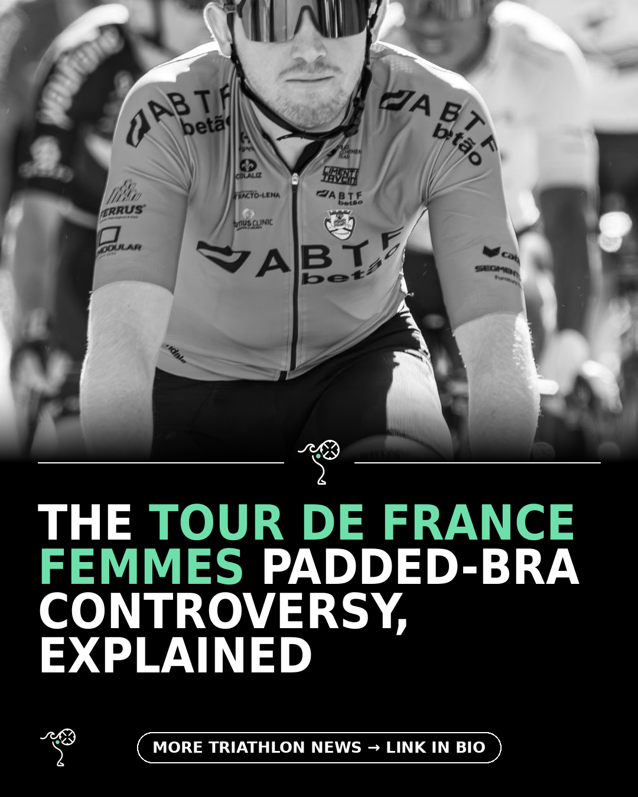

Triathlon News Daily
Friday, 14 August 2026 · generated automatically

Today's stories
- The padded-bra row at the Tour de France Femmes220 Triathlon
- Lucy Charles-Barclay: music is how I get the work done220 Triathlon
- Fasted training for triathletes: real gains or just hunger220 Triathlon
- One rider's Ironman Mont Tremblant crash, in her own wordsMarathons & Motivation
- Orca Athlex Flex V2 vs Blueseventy Fusion, tested head to head220 Triathlon
- What are the best watches for swimming? We test the top options for pool training and open-water swims220 Triathlon